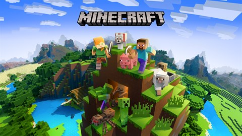

The Witcher 3: Wild Hunt

Uno de los RPGs más aclamados de todos los tiempos, ahora listo para una nueva generación.
Eres Geralt de Rivia, cazador de monstruos.
En un continente devastado por la guerra e infestado de criaturas, tu misión es encontrar a Ciri, la niña de la profecía, un arma viviente que puede alterar el mundo tal y como lo conocemos.
Actualizado a la versión más reciente,
The Witcher 3: Wild Hunt incluye contenido publicado para el juego, junto con nuevos añadidos: un modo foto integrado, objetos inspirados en la serie de Netflix The Witcher —espadas, armaduras y atuendos alternativos— ¡y muchas cosas más!
Red Dead Redemption 2

América, 1899.
Arthur Morgan y la banda de Van der Linde se ven obligados a huir. Con agentes federales y los mejores cazarrecompensas de la nación pisándoles los talones, la banda deberá atracar, robar y luchar para sobrevivir en su camino por el escabroso territorio del corazón de América. Mientras las divisiones internas aumentan y amenazan con separarlos a todos,
Arthur deberá elegir entre sus propios ideales y la lealtad a la banda que lo vio crecer.
Con contenido adicional para el Modo Historia y un completo modo Foto, Red Dead Redemption 2 también incluye acceso gratuito al mundo multijugador compartido de Red Dead Online, en el que los jugadores asumen diversos roles para ganarse la vida a su manera en la frontera mientras persiguen a fugitivos buscados como cazarrecompensas, crean un negocio como
comerciantes, descubren exóticos tesoros como coleccionistas, dirigen una destilería ilegal como licoristas y muchas cosas más.
Minecraft

Minecraft es un juego formado por bloques, criaturas y comunidades. La elección es tuya: sobrevivir a la noche o crear una obra de arte. Pero, si te abruma tener que explorar un nuevo y vasto mundo por tu cuenta, ¡no temas! ¡Vamos a explorar de qué va Minecraft!
No hay un objetivo definido en Minecraft, ¡puedes jugar cómo quieras! Por eso se le suele llamar "juego sandbox": puedes hacer montones de cosas y hay montones de formas de jugar. Si tu pasión es la creatividad, puedes usar los bloques para construir todo lo que puedas imaginar. Si lo tuyo es el coraje, puedes explorar el mundo y enfrentarte a arriesgados desafíos. Los bloques pueden romperse, fabricarse, colocarse para dar forma al paisaje o usarse para construir creaciones fantásticas.
Dependiendo de cómo quieras jugar, podrás luchar contra las criaturas o entablar amistad con ellas. El mundo de Minecraft permite vivir aventuras épicas, meditar tranquilamente y todo lo demás. ¡Puedes incluso compartir tus creaciones con otros jugadores o jugar en mundos comunitarios!